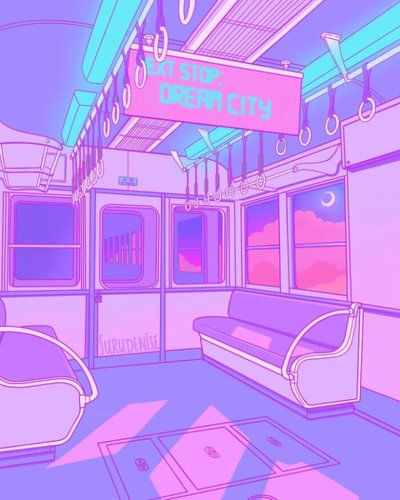
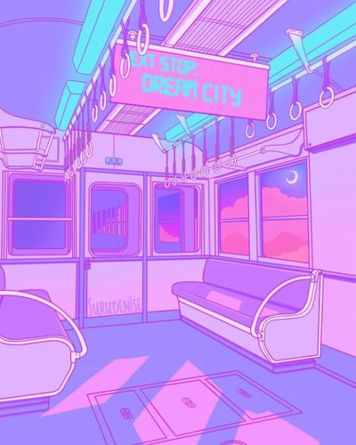

关于我?

真要开始写写自己，发现却无从写起。我了解自己吗？我想是不了解的，像现在这样与自己独处的时间，很少很少。大部分的时间都在忙碌，我也会反复逃避这样的状态，以试图拥有休闲时光。可是不久就要再度投入到忙碌的生活当中去。在生活和学习当中，我总是平衡不了。我想，这可能是要花一辈子的时间去抗衡。
信息大爆炸的时代，想知道想了解的东西太多了，可是理解的东西却更少了。海量的信息下，每个人都变得渺小了起来，我想我的焦虑也来源于此。我经常处于自我堵塞的状态下。我想我需要改变自己的思维了。我不再需要记忆的能力，相反，我需要的是删除的能力。我有不知情权。
其实，最近，我的状态也挺好的。我并没有焦虑。每一天起来也是轻快的，多了写思考，而不是做一个记忆机器。记忆的事情就交给互联网吧。也不知道过段时间再看现在写的东西，是什么感觉，希望可以起个警醒的作用吧。
我时常分不清那些是真实的我，那些又是环境造就的我。哪些是我真实的想法，那些又是外界强加给我的呢？相信很多人
都常常困惑这些问题，会开始怀疑生活的真实性。我想我不会找到答案，有的问题好像看似挺浅的但是深入之后才会发现这根本就是无底洞。
其实生活在当下就好了，有些世俗的欲望，有点对生活的期待，你可以不聪明，你也可以停下来，你甚至可以做一些大家不理解觉得愚蠢的事情。我觉得一个人最好 的生活状态就是差那么一点，不必完美。放过自己，其实也是放过他人。亲手给自己贴上标签，束缚自己的，可能就是你自己。
我并不是说你，而是你的思维？ 
其实生活在当下就好了，有些世俗的欲望，有点对生活的期待，你可以不聪明，你也可以停下来，你甚至可以做一些大家不理解觉得愚蠢的事情。我觉得一个人最好 的生活状态就是差那么一点，不必完美。放过自己，其实也是放过他人。亲手给自己贴上标签，束缚自己的，可能就是你自己。
我并不是说你，而是你的思维？ 